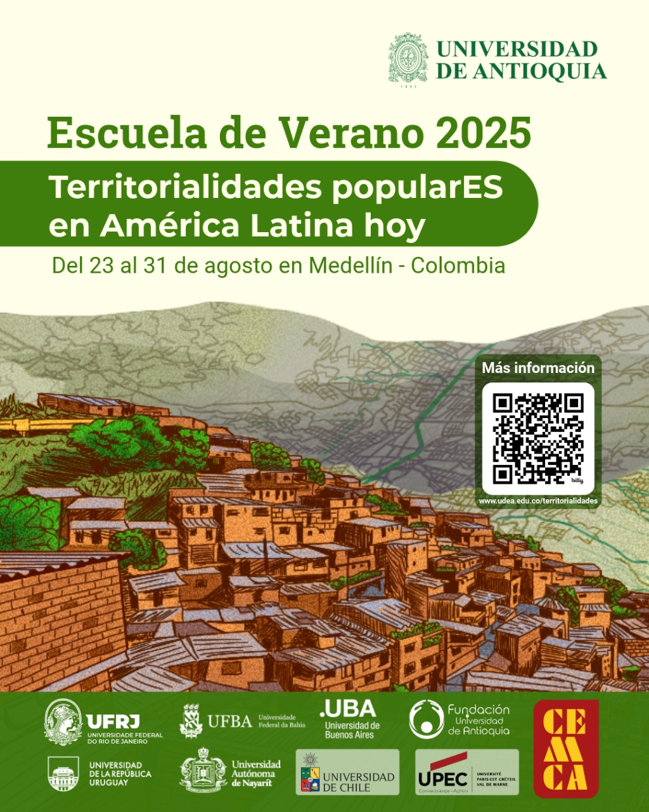
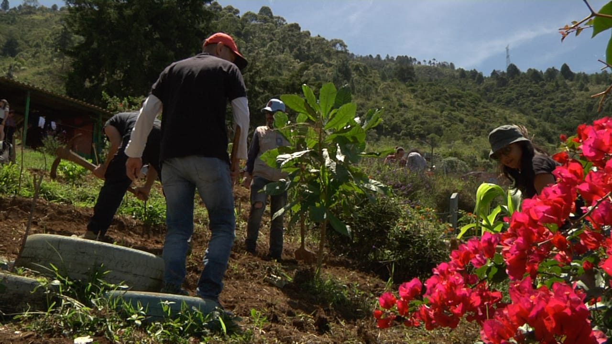
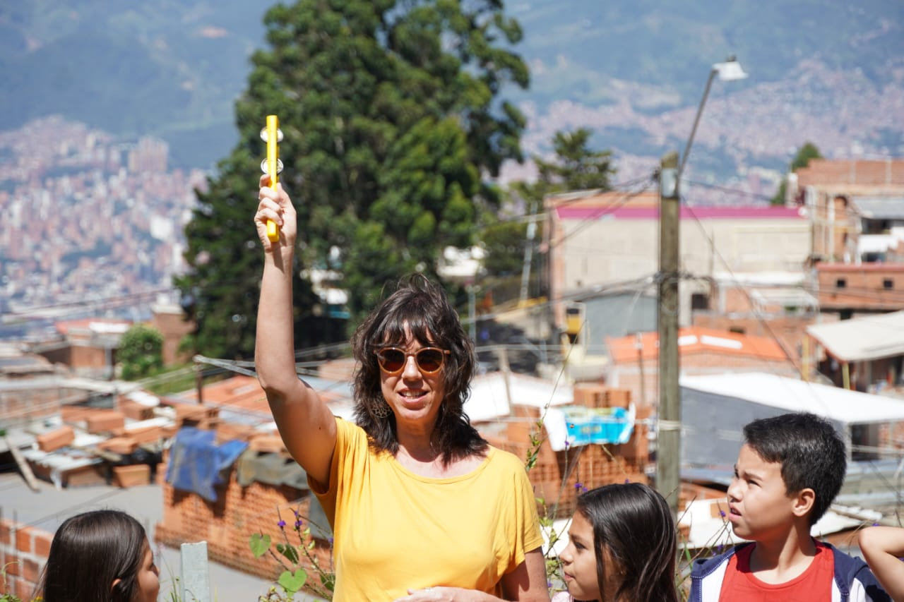

Juntanza latinoamericana
Escuela de Verano: Territorialidades popularES en América Latina hoy



La Escuela de Verano: territorialidades popularES en América Latina hoy es un evento de ciudad dinamizado por una juntanza latinoamericana que actúa como red constituida representantes de universidades públicas de Colombia, Chile, Uruguay, México, Brasil, Argentina y Francia; servidores públicos y habitantes de barrios populares.
Su pretensión es contribuir a la actualización de debates teóricos, metodológicos y empíricos en torno a lo popular en América Latina, desde el análisis de casos concretos, así como la incidencia territorial in situ como posibilidad para realizar la misión universitaria en vínculo con la sociedad. Para ello concentrará, en una semana, acciones de cooperación académica y social en docencia (minicursos), extensión (exposición de investigación creativa, documental, acciones territoriales implicadas en barrios populares, recorridos urbanos con sentido formativo), investigación e internacionalización (seminario académico, prelanzamiento de libro).

La riqueza y potencialidad articuladora de la Escuela de Verano se encuentra en que es en sí misma una plataforma inter, transdisciplinar y estratégica que fundamenta la proyección de una agenda de trabajo de largo aliento. En esta se contempla la formulación e implementación de proyectos de investigación y extensión, de pasantías, la divulgación de nuevo conocimiento, la gestión de recursos, entre otros.
El evento es planeado y gestionado entre diferentes universidades participantes, siendo responsable de su organización e implementación, en esta primera versión, la Universidad de Antioquia, particularmente, la Facultad de Ciencias Sociales y Humanas FCSH mediante el Departamento de Trabajo Social, el grupo de investigación Medio Ambiente y Sociedad-MASO, el Centro de Articulación para la Innovación y la Transformación Social-CAITS; y el Instituto de Estudios Regionales-INER desde el Grupo Estudios del Territorio-GET.
Las actividades son posible por el aporte de varias unidades académicas de la UdeA como la Facultad de Ciencias Sociales y Humanas (Departamento de Trabajo Social, Grupo Medio Ambiente y Sociedad de la FCSH, Centro de Articulación para la Innovación y la Transformación Social-CAITS/FCSH, Fondo Editorial Facultad de Ciencias Sociales y Humanas de la Universidad de Antioquia); el Instituto de Estudios Regionales desde el grupo Estudios del Territorio (GET); la Dirección de Relaciones Internacionales y Extensión-UdeA. También financian la Escuela de Verano la Fundación Universidad de Antioquia, habitantes y colectivas vecinales e institucionales del barrio Bello Oriente, de la zona nororiental y de Nuevo Occidente; Alcaldía de Medellín (Sistema de Bibliotecas Públicas de Medellín -Parque Biblioteca Nuevo Occidente Lusitania, Parque Biblioteca Nororiental-), Corporación Región, el Metro de Medellín y la fundacion Bureau de Convenciones de Medellín.
